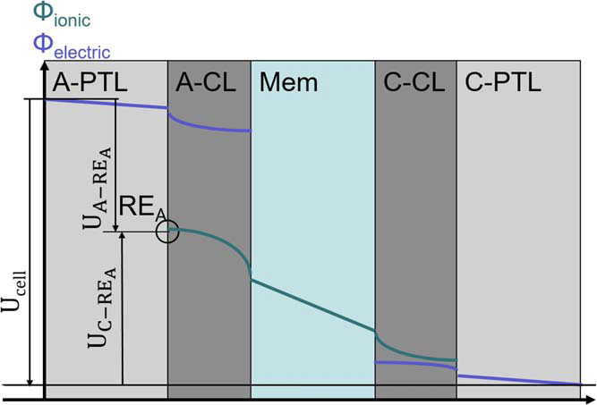
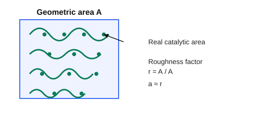

Single Cell Modeling#
Governing Equations (Mass, Charge, Energy)#
This section organizes the single-cell PEM electrolyzer model as a coupled multiphysics problem over channels, porous transport layers (PTLs), catalyst layers (CLs), and membrane.
Model domains and state variables#
Typical primary fields are:
Species concentrations or partial pressures: \(c_k\) or \(p_k\)
Potentials: solid phase \(\phi_{\mathrm{sol}}\), ionic phase \(\phi_{\mathrm{mem}}\)
Temperature: \(T\)
Membrane hydration variable: \(\lambda\) (if hydration dynamics are included)
The model is closed by constitutive laws for reaction kinetics, transport properties, and source terms.
Species conservation#
For each species \(k\) in a control volume:
with flux (dilute convection-diffusion form):
and reaction source in CLs:
where \(\nu_k\) is stoichiometric coefficient, \(i\) is local current density, and \(n\) is electron number of the half-reaction.
Charge conservation#
Charge transport is split between electronic and protonic phases.
Electronic (solid matrix):
Ionic (membrane/ionomer):
In CLs, source coupling is typically:
which enforces current continuity between phases.
Energy conservation#
A representative energy balance is:
where:
\(q_{\mathrm{rxn}}\) includes irreversible electrochemical heat
\(q_{\Omega}\) is Joule heating in electronic/ionic paths
\(q_{\mathrm{phase}}\) captures latent effects (if two-phase model is used)
Water transport in membrane (optional dynamic hydration)#
When hydration is modeled explicitly, a common form is:
combining back-diffusion and electro-osmotic drag.
Voltage closure#
Cell voltage is computed from reversible potential and losses:
where each overpotential is obtained from local fields and integrated or averaged according to model fidelity.
Boundary and interface conditions#
A consistent setup typically includes:
Inlet channels: specified flow/composition/temperature
Outlets: specified pressure or convective outflow
Current collectors: imposed current density or potential
Layer interfaces: continuity of species, heat, and charge fluxes
This structure yields a solvable coupled PDE/DAE system for single-cell simulation, parameter estimation, and control-oriented model reduction.
Electrochemical Kinetics#
Electrochemical Reactions#
The electrochemical reactions in an acid-electrolyte PEM electrolyzer are the oxygen evolution reaction (OER, at the anode) and the hydrogen evolution reaction (HER, at the cathode). Written in acidic form:
Anode (OER, oxidation) $\( 2\,\mathrm{H_{2}O(l)} \rightarrow \mathrm{O_{2}(g)} + 4\,\mathrm{H^{+}} + 4\,\mathrm{e^{-}} \)$
Cathode (HER, reduction) $\( 4\,\mathrm{H^{+}} + 4\,\mathrm{e^{-}} \rightarrow 2\,\mathrm{H_{2}(g)} \)$
Here we should note that at both the anode and cathode sides, both reduction and oxidation reactions happen meanwhile. At the anode side, the dominant reaction is the oxidation one while at the cathode side the reduction reaction is dominant. In the above two chemical reaction formulas, the reactions along the arrows are dominant.
Overall reaction $\( 2\,\mathrm{H_{2}O(l)} \rightarrow \mathrm{O_{2}(g)} + 2\,\mathrm{H_{2}(g)} \)$
Reversible Cell Potential (Nernst)#
Standard reversible potential \(E^{\circ} \approx 1.229\,\mathrm{V}\) at \(298.15\,\mathrm{K}\):
An often used temperature dependence (valid roughly for \(273\)–\(353\,\mathrm{K}\) at liquid water reference state) is
which yields \(E^{\circ}\approx 1.185\,\text{V}\) at \(80\,^{\circ}\text{C}\). Insert this \(E^{\circ}(T)\) in the Nernst expression above when evaluating reversible voltage at temperature \(T\) and specified gas pressures.
Faradaic Relation#
Connect current density to production rate:
Use these as source terms in species mass balances (sign chosen by production/consumption).
Overpotentials#
Charge Transport (solid and membrane)#
Solid matrix (current collectors, PTLs, catalyst support): $\( -\nabla \cdot (\sigma_{\text{sol}} \nabla \phi_{\text{sol}}) = 0 \quad \text{(outside CLs)}, \)\( and in CLs the source couples to Faradaic current: \)-\nabla \cdot (\sigma_{\text{sol}} \nabla \phi_{\text{sol}}) = a_{\mathrm{eff}}, i_{\mathrm{BV}}\(. Protonic path (membrane/ionomer): \)\( -\nabla \cdot (\kappa_{\text{mem}} \nabla \phi_{\text{mem}}) = a_{\mathrm{eff}}\, i_{\mathrm{BV}}. \)$
In all solid layers, including current collector and PTLs, the solid potential respects: $\( -\bm{n}\sigma_{ef}\nabla \phi_{\mathrm{sol}} =I_{ap} \)\( where \)\bm{n}$ is the unit vector in the current direction (from left to right in the following figure).

$\( \eta_{\mathrm{an}}^{\mathrm{o}} = \phi_{\mathrm{sol}} - \phi_{\mathrm{mem}} - U_{\mathrm{an}}^{0} \)\( \)\( \eta_{\mathrm{cn}}^{\mathrm{o}} = \phi_{\mathrm{sol}} - \phi_{\mathrm{mem}} - U_{\mathrm{cn}}^{0} \)$Kinetics (Butler–Volmer)#
On the anode side,
On the cathode side,
For large overpotentials the Tafel approximation is convenient:
The current direction in the above two equations is from the external circuit to the solid part and from the interface to the bulk membrane part. So normally, the current sign at the anode side should be positive while it is negative at the cathode side.
Modeling Notes#
Include electrode-specific \(i_{0}(T)\) (Arrhenius) and effective surface area \(a_{\mathrm{eff}}\) so \(i_{\mathrm{loc}} = a_{\mathrm{eff}}\, i_{\mathrm{BV}}\). The current measured at the current collector is the area integral of this local current: \(I = \int_{A_{\text{geom}}} i_{\mathrm{loc}}\,\mathrm{d}A\). If \(i_{\mathrm{BV}}\) and \(a_{\mathrm{eff}}\) are uniform, the geometric current density is \(i_{\text{geom}} = I/A_{\text{geom}} = a_{\mathrm{eff}}\, i_{\mathrm{BV}}\).
Mass-transport limitations modify surface activities (concentration overpotential). Use local \(a_{\mathrm{H^{+}}}\), \(p_{\mathrm{H_{2}}}\), and \(p_{\mathrm{O_{2}}}\) in Nernst and \(i_{0}\) expressions.
In porous catalyst layers, the reaction source for species conservation is \( \nabla\cdot\!(\mathbf{N}_{k}) = S_{k} = \nu_{k}\, r_{\mathrm{rxn}}\) with \(r_{\mathrm{rxn}} = i/(nF)\), where \(\nu_{k}\) is stoichiometry value for species \(k\).
For control design, linearize kinetics about an operating point \(i^{\star}\) to obtain the small-signal gain \(\partial \eta / \partial i\).
Estimating the Effective Surface Area \(a_{\mathrm{eff}}\)#
CV (Pt cathode, HUPD/CO-stripping): integrate the H adsorption charge \(Q_H\); (\text{ECSA} = Q_H / (0.21,\text{mC,cm}^{-2}{\text{Pt}})); then (a{\mathrm{eff}} = \text{ECSA}/A_{\text{geom}}) (roughness factor).
Double-layer capacitance: measure \(C_{\text{dl}}\) (EIS or non-faradaic CV); assume specific capacitance \(C_{\text{sp}}\) (e.g., 20–60 \(\mu\)F,cm\(^{-2}\)); (\text{ECSA} = C_{\text{dl}}/C_{\text{sp}}); (a_{\mathrm{eff}} = \text{ECSA}/A_{\text{geom}}).
Loading and particle size back-of-envelope: for spherical particles, (a_{\mathrm{eff}} \approx 6, (\text{loading}\times f_{\text{util}})/(\rho_{\text{cat}}, d_p)); divide by electrode geometric area to get per-area roughness; \(f_{\text{util}}\) accounts for ionomer coverage/agglomeration.
OER (Ir/Ru oxide) anode: often use capacitance-based ECSA or kinetic fits; report roughness factor (a_{\mathrm{eff}}) relative to geometric area.
Degradation: model loss of ECSA via a decaying \(a_{\mathrm{eff}}(t)\) to capture aging in long-term simulations.
Figure: Catalyst Layer Schematic#
The LaTeX version included a TikZ schematic of the catalyst layer highlighting triple-phase boundaries. Convert that diagram to an SVG/PNG and reference it here when available.
{kind=link}

Fig. 1 Effective catalytic surface area relative to geometric area (roughness factor (a_{\mathrm{eff}})). The wavy green surface and active sites illustrate how true area exceeds the projected geometric area.#
Species Transport (gas/liquid)#
Fickian form in channels: $\( \frac{\partial c_k}{\partial t} + \nabla \cdot(-D_k\nabla c_k + c_k \mathbf{u}) = S_k, \)$ where
\(\partial c_k/\partial t\): transient accumulation of species \(k\) (\( mol\cdot m^{-3} s^{-1}\)).
\(-D_k \nabla c_k\): diffusive flux driven by concentration gradients; \(D_k\) is the (effective) diffusion coefficient (\(m^{2} s^{-1}\)).
\(c_k \mathbf{u}\): convective flux carried by the bulk velocity \(\mathbf{u}\) (\(m s^{-1}\)); together with diffusion it forms the total flux inside the divergence.
\(\nabla\cdot(\cdot)\): divergence gives the net outflow of the total flux per unit volume.
\(S_k\): source/sink term (\( mol\cdot m^{-3} s^{-1}\)); here it includes electrochemical production/consumption in the catalyst layer via \(S_k = \nu_k\, i/(nF)\) (positive for production).
where \(S_k\) includes electrochemical source terms \(S_k = \nu_k\, i/(nF)\) in CLs. In membrane, water content \(\lambda\) often uses a diffusive plus electro-osmotic drag form: \(N_{\mathrm{H_2O}} = -D_{\lambda}\nabla \lambda + n_{\text{drag}} (i/F)\).
Porous media (CL/PTL)
Effective diffusivity: \(D_{k,\text{eff}} = D_{k,\text{bulk}}\, \varepsilon^{1.5}/\tau\) (Bruggeman) to account for porosity \(\varepsilon\) and tortuosity \(\tau\).
Flux form (dilute Fick): \(N_k = -D_{k,\text{eff}}\nabla c_k\); in binary gas, a Stefan–Maxwell form captures multicomponent effects: \(\nabla p_k = \sum_j (x_k x_j/\mathcal{D}_{kj}) (\mathbf{N}_k - \mathbf{N}_j)\).
Knudsen correction in small pores: \(1/D_{k,\text{eff}} = 1/(D_{k,\text{mol}}\,\varepsilon^{1.5}/\tau) + 1/D_{k,\text{Kn}}\), \(D_{k,\text{Kn}} \propto r_p\sqrt{T/M_k}\).
Flux form (dilute Fick): \(N_k = -D_{k,\text{eff}}\nabla c_k\); in binary gas, a Stefan–Maxwell form captures multicomponent effects: \(\nabla p_k = \sum_j (x_k x_j/\mathcal{D}_{kj}) (\mathbf{N}_k - \mathbf{N}_j)\).
Stefan–Maxwell detail (multicomponent): $\( -\nabla x_k = \sum_{j\neq k} \frac{x_j\mathbf{N}_k - x_k\mathbf{N}_j}{c_T\,\mathcal{D}_{kj}}, \)\( where \)x_k\( are mole fractions, \)c_T\( total concentration, and \)\mathcal{D}_{kj}$ binary diffusivities. It naturally enforces that fluxes of one species depend on gradients and counter-fluxes of the others; reduce to Fick’s law in binary limit.
Knudsen correction in small pores: \(1/D_{k,\text{eff}} = 1/(D_{k,\text{mol}}\,\varepsilon^{1.5}/\tau) + 1/D_{k,\text{Kn}}\), \(D_{k,\text{Kn}} \propto r_p\sqrt{T/M_k}\).
Stefan–Maxwell: derivation sketch
Species momentum balance (low Mach, ideal gas, no body force): \(0 = -\nabla p_k + \sum_{j\neq k} \mathbf{f}_{kj}\).
Friction closure: \(\mathbf{f}_{kj} = (c_k c_j RT/\mathcal{D}_{kj})(\mathbf{v}_j-\mathbf{v}_k)\) with binary diffusivity \(\mathcal{D}_{kj}\).
Flux–velocity link and barycentric frame: \(\mathbf{N}_k = c_k \mathbf{v}_k\), with \(\sum_k \mathbf{N}_k = 0\) for zero bulk flow (or use \(\mathbf{u}\) if nonzero).
Substitute \(\mathbf{v}_k = \mathbf{N}_k/c_k\), divide by \(c_T RT\), and write \(x_k=c_k/c_T\) to obtain $\( -\nabla x_k = \sum_{j\neq k} \frac{x_j\mathbf{N}_k - x_k\mathbf{N}_j}{c_T\,\mathcal{D}_{kj}}, \)\( which reduces to Fick in the binary limit. With pressure gradients, use \)\nabla p_k = \sum_{j\neq k} (x_k x_j/\mathcal{D}_{kj})(\mathbf{N}_k-\mathbf{N}_j)\( and \)p_k=x_k p$ for ideal gases.
Friction closure from basic principles
Start with species momentum balance (no inertia, no body forces): \(0 = -\nabla p_k + \sum_{j\neq k} \mathbf{f}_{kj}\). This states pressure-gradient force on \(k\) is balanced by interspecies friction.
Model collision drag: collisions between \(k\) and \(j\) transfer momentum at a rate proportional to their relative velocity. Let \(\mathbf{f}_{kj} \propto (\mathbf{v}_j-\mathbf{v}_k)\) and scale with collision frequency \(\propto c_k c_j\) and thermal energy \(RT\); introduce binary diffusivity \(\mathcal{D}_{kj}\) as the proportionality: \(\mathbf{f}_{kj} = (c_k c_j RT/\mathcal{D}_{kj})(\mathbf{v}_j-\mathbf{v}_k)\).
Enforce Newton’s third law: \(\mathbf{f}_{kj} = -\mathbf{f}_{jk}\) so momentum exchange is pairwise conservative.
Link velocities to fluxes: \(\mathbf{N}_k = c_k \mathbf{v}_k\); choose barycentric frame so \(\sum_k \mathbf{N}_k = 0\) (or keep a bulk velocity term otherwise).
Substitute the friction closure and flux–velocity relation into the momentum balance, divide by \(c_T RT\), and express concentrations as mole fractions \(x_k=c_k/c_T\) to obtain the Stefan–Maxwell form above.
Two-phase note (gas + liquid)
Use saturation \(s_l\); gas-phase transport scales with \((1-s_l)^{n_g}\), liquid with \(s_l^{n_l}\); capillary diffusion may be added via Leverett \(J(s_l)\) if needed.
Source coupling: oxygen generated in anode CL, hydrogen in cathode CL; water consumed/produced depending on side and modeled phase.
Boundary conditions
Inlet channels: specified \(c_k\) or \(y_k\), temperature, and flow rate (Dirichlet or Robin). Outlet: convective (zero diffusive flux) or fixed pressure.
Interface channel \leftrightarrow PTL: continuity of flux and concentration; sometimes a mass-transfer coefficient \(k_m\) with \(N_k = k_m (c_{k,\text{chan}} - c_{k,\text{PTL}})\).
CL \leftrightarrow membrane: proton/water flux continuity; set water activity-dependent \(\lambda(a_w)\) at interfaces.
Coupling to reaction Species source \(S_k = \nu_k\, i/(nF)\) enters the conservation equation inside the CL. Mass-transport limitations feed back into kinetics via surface concentrations/activities used in Nernst and exchange current density \(i_0\).
Gas Transport in Porous Layers#
Often represented with Darcy or Darcy–Forchheimer plus species convection-diffusion; a simple effective-diffusion model in CL/PTL is $\( N_k = -\frac{\varepsilon^{1.5} D_{k,\text{bulk}}}{\tau}\,\nabla c_k, \)\( with porosity \)\varepsilon\( and tortuosity \)\tau$; for two-phase, add saturation-dependent corrections.
Water Management in Membrane#
Electro-osmotic drag: \(n_{\text{drag}}\,(i/F)\) from anode to cathode.
Back-diffusion: driven by \(\nabla \lambda\) with \(D_{\lambda}(T,\lambda)\).
Water uptake isothermal isotherm links \(\lambda\) and water activity \(a_w\) at interfaces.
Energy Balance#
Lumped solid/fluid energy balance (example for a 0D cell control volume): $\( \rho c_p \frac{dT}{dt} = \nabla \cdot (k \nabla T) + i\,\eta_{\text{act}} + i\,\eta_{\text{ohm}} - hA(T-T_{\infty}) + q_{\text{phase}}, \)\( where the source terms gather irreversible heating (activation + ohmic) and phase-change enthalpy if present. In 1D through-plane models, use layer-specific \)k$ and include anisotropy in GDL/CL.
0D and 1D Modeling Approaches#
Compare lumped (0D) and through-plane (1D) models, highlighting assumptions and typical boundary conditions.
Parameter Estimation and Calibration#
Discuss fitting kinetics and transport parameters to polarization curves or EIS data.
Case Study: Fitting a Polarization Curve#
Outline a simple workflow for calibrating model parameters against experimental polarization data.